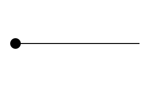

| Safe Haskell | Safe-Inferred |
|---|---|
| Language | Haskell2010 |
Reanimate.Ease
Description
Easing functions modify the rate of change in animations. More examples can be seen here: https://easings.net/.
Documentation
type Signal = Double -> Double Source #
Signals are time-varying variables. Signals can be composed using function composition.
curveS :: Double -> Signal Source #
S-curve signal. Takes a steepness parameter. 2 is a good default.
Example:
signalA(curveS2)drawProgress

powerS :: Double -> Signal Source #
Power curve signal. Takes a steepness parameter. 2 is a good default.
Example:
signalA(powerS2)drawProgress
bellS :: Double -> Signal Source #
Bell-curve signal. Takes a steepness parameter. 2 is a good default.
Example:
signalA(bellS2)drawProgress
oscillateS :: Signal Source #
cubicBezierS :: (Double, Double, Double, Double) -> Signal Source #
Cubic Bezier signal. Gives you a fair amount of control over how the signal will curve.
Example:
signalA(cubicBezierS(0.0, 0.8, 0.9, 1.0))drawProgress